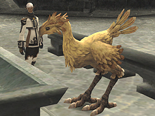

[Chocobo Raising]

With the cooperation of the VCS (Vana’diel Chocobo Society), adventurers will be able to create care plans and raise their very own chocobos. Eventually, players will be able to breed their fully grown chocobos and possibly produce rare and expensive eggs!
Beginning Chocobo Raising
The process of chocobo raising begins when you trade an egg obtained from a shop or battlefield to a VCS chocobo trainer (located in the stables of the three starting nations). You won’t be able to tell the attributes or coloring of your chocobo until the egg hatches.
*Note that you cannot trade another egg to a chocobo trainer once the chocobo raising process has begun. Also, the process of raising a chocobo must be continued in the nation where the egg was traded.

VCS Chocobo Trainers
- San d’Orian stables: Hantileon
- Bastokan stables: Zopago
- Windurstian stables: Pulonono
*There are new NPCs in the chocobo stables known as “chocoguys” who will help you understand the process of chocobo raising.
Chocoguys
- San d’Orian stables: Arvilauge
- Bastokan stables: Gonija
- Windurstian stables: Kiria-Romaria
The VCS has dispatched six new journeymen trainers to the chocobo stables in each of the three nations of Bastok, San d’Oria, and Windurst. Three are in charge of Kamp Kweh operations, while the other three run the Chocobo Hot and Cold Game.
San d’Oria
Kamp Kweh: Fonteloube
Chocobo Hot and Cold Game: Collione
Bastok
Kamp Kweh: Gerahja
Chocobo Hot and Cold Game: Keturah
Windurst
Kamp Kweh: Shaty-Monty
Chocobo Hot and Cold Game: Bwi Kaghonsa
[From Egg to Chocobo]
The process of raising a chocobo from egg, to chick, to adolescent, to adult will take approximately one month (Earth time).
Adventurers will work with a VCS chocobo trainer to care for their chocobo. The attributes of a fully grown chocobo will depend on the treatment it receives during this time.
Chocobo Care
Visiting your chocobo and caring for it directly will create bonds of affection that cannot be replaced by even the most detailed care plan. It is not strictly necessary to provide this level of dedication; however, your loving attention will have a noticeable effect on your chocobo’s development. It is also possible to cure your chocobo of several different status ailments with direct care.
- Special Abilities
Your chocobo may obtain special abilities depending on the method of care you employ. Each chocobo is limited to a maximum of 2 abilities.
- Events
You will witness various events while caring for your chocobo.
Feeding Your Chocobo
Using special feed or medicine will help your chocobo recover from exhaustion and status ailments. Trade the feed you obtain from shops or gardening to the VCS chocobo trainer. Overfeeding your chocobo may lead to stomachaches.
Care Plans
VCS chocobo trainers will provide a basic level of care for your chocobo by following the care plan that you create.
Creating a Care Plan
It is possible to create 4 consecutive care plans for your chocobo. First, register the type of care you wish your chocobo to receive for each plan. Next, decide the duration (up to 7 days) for each registered plan.
*Note that it is possible to make changes to your care plan at any time. In the case where you do not register a care plan, a 7-day plan of basic care will be implemented for you.
[Chocobo Raising Tips]
The most important part of raising a chocobo is to create a bond of affection. Your chocobo will thrive on your personal attention. Otherwise, stay aware of its physical condition and diet, and before long you’ll have a happy and healthy adult chocobo!
- Caring for Eggs
In general, eggs will hatch with little effort on your part. However, the chick inside will feel your loving attention, so be sure to keep watch over your charge.
- Caring for Chicks
Your newly hatched chick will need a name! Naming your chocobo will be necessary for future procedures.
You will notice that more options are now available for chocobo care. Just remember that you cannot choose these options while your chick is sleeping.
*You can choose 2 names from a list of available words, with a maximum combination of 15 letters. Names cannot be changed once they have been chosen.
- Caring for Young Chocobos
Several more care options will become available when your chocobo reaches this stage of development. Your chocobo will now be able to travel far and wide, but will also become susceptible to injury and illness if not cared for properly. If you leave your young chocobo alone for long periods of time, it might just decide to run away from home!
- Caring for Adult Chocobos
Your fully grown chocobo can now be called as a mount, and also become a candidate for matchmaking.
Once this peak of growth has been reached, your chocobo will gradually approach retirement age.
- Kamp Kweh
Kamp Kweh is a place where adventurers can bring their chocobos to interact with others, view the conditions of the other participants' animals, and confirm breeding compatibility.
*Having your chocobo interact with others will occasionally result in beneficial effects.
[Adult Chocobos]
The Chocobo Hot and Cold Game -- A new treasure-hunting activity for chocobos and their owners has been introduced.
How to Participate
First speak to one of the VCS representatives stationed in Bastok, San d’Oria, or Windurst. After an explanation of the rules, the representative will give you a chocograph with the name of several areas on it, as well as a clump of Tandjana wildgrass, used to call your chocobo in the field.
*You can check the areas available for The Chocobo Hot and Cold Game by examining the chocograph key item.
*Your chocobo must be registered before participating.
*You must possess the maps of the areas listed on the chocographs.
*After using a clump of Tandjana wildgrass, you must let your chocobo rest 24 hours before receiving a new one.
How to Play
1. Use the Tandjana wildgrass in one of the areas designated on your chocograph.
2. Once your chocobo arrives, your map will open and a marker (???) will indicate the general location of a hidden treasure coffer.
3. Ride your chocobo to the vicinity of the marker and dig. Depending on the relative distance you are from the coffer, your chocobo will react differently.
4. Your chocobo will tire after a certain number of digs. The game is over when you find the treasure or if your animal becomes too fatigued to dig anymore.
*Gysahl greens are not needed to dig.
*You cannot use gysahl greens to perform normal digging while participating.
*You cannot leave the area on your chocobo while participating.
*You can dig in locations that your chocobo usually cannot.
*If you are disconnected from the Internet while participating, the game will automatically be over.
Matchmaking
Once your chocobo has reached a mature stage of development, it is possible to match it with other chocobos. The resulting offspring may exhibit the attributes or coloring of its parents.
- Chococards
You can receive a chococard by speaking with the VCS trainer and selecting the “Ask for a chococard” option.
This chococard is a chart that contains your chocobo’s vital statistics. There are chococards for both male and female chocobos: chococard (M) and chococard (F).
- The Matchmaking Process
1. Obtain the chococards for the chocobos you wish to match.
2. Speak to the NPC Finbarr in Upper Jeuno to purchase a VCS honeymoon ticket.
3. Trade the following items to Finbarr:
Chococard (M)
Chococard (F)
VCS honeymoon ticket
Chocobo Mounts
To be able to call your chocobo as a mount, speak to the VCS trainer and select the option “Register to call your chocobo.”
The status of the chocobo you call will be based on the condition of the chocobo at the time of registration. An enchanted item known as a “chocobo whistle” is necessary to actually call your chocobo. Equipping the chocobo whistle and using the enchantment will summon your chocobo.
*You cannot register multiple chocobos to call as mounts. Also, it is necessary to re-register a chocobo to take advantage of subsequent growth and development.
*You must possess a chocobo license to be able to call a chocobo.
Retirement
Chocobos will eventually be retired from the raising process. It is possible to voluntarily retire an adult chocobo by speaking with the VCS trainer and selecting the option “Retire your chocobo.”
A retired chocobo will be registered on a VCS registration card, and taken into the care of the VCS.
*A retired chocobo can no longer be involved in the chocobo raising process.
*A chocobo with which you have chosen the option “Give up chocobo raising” will not be registered on a VCS registration card.
*A VCS registration card will only be issued once. Please take care not to throw the card away.
- Matchmaking and Riding Retired Chocobos
Trade the VCS registration card to the VCS trainer. You will then have the option to obtain a chococard or register to call your chocobo.
[Chocobo Attributes]
You can see the condition of a chocobo you are raising by speaking with the VCS trainer and selecting the option “Ask about chocobo's condition.”
Physical
- Strength: Affects the chocobo’s running speed.
- Endurance: Affects chocobo riding duration.
Mental
- Discernment: Affects the chocobo’s potential to learn abilities.
- Receptivity: Affects the chocobo’s ability to communicate with fellow chocobos.
Other attributes
- Energy: The power the chocobo needs to remain active. Affects the success of care plans and the frequency of care options.
- Affection: The most important part of chocobo raising. Greatly affects the success of care plans.
- Satisfaction: Changes with feeding and affects energy recovery.
[Types of Care]
*Care types will be added as the chocobo matures.
*The care type “Compete against others” will only be added after certain conditions are met.
| Type of Care | Effect |
| Watch over the chocobo |
Strengthens bonds of affection. Places very little stress on the chocobo. |
| Tell a story | Strengthens bonds of affection and trains mental faculties. Telling various stories may have a beneficial effect for the chocobo. |
| Scold the chocobo | Disciplines the chocobo. Has a chance to wake a sleeping chocobo. Slightly weakens bonds of affection. |
| Compete against others |
Strengthens bonds of affection, but depletes stamina. Entertains a bored chocobo. |
| Go on a walk | Your chocobo’s affection for you will improve greatly, but all that exercise will tire it as well. You also may meet other chocobo owners on your walks, as well as find buried items. |
[Care Plans]
*Care plans will be added as the chocobo matures.